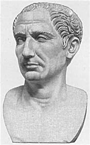

 Gaius Julius Caesar[b] (Classical Latin: [ˈɡaː.i.ʊs ˈjuː.li.ʊs ˈkae̯.sar]; 13 July 100 BC [1] – 15 March 44 BC)[2] was a Roman statesman, general and notable author of Latin prose. He played a critical role in the events that led to the demise of the Roman Republic and the rise of the Roman Empire. In 60 BC, Caesar, Crassus, and Pompey formed a political alliance that was to dominate Roman politics for several years. Their attempts to amass power through populist tactics were opposed by the conservative ruling class within the Roman Senate, among them Cato the Younger with the frequent support of Cicero. Caesar's victories in the Gallic Wars, completed by 51 BC, extended Rome's territory to the English Channel and the Rhine. Caesar became the first Roman general to cross both when he built a bridge across the Rhine and conducted the first invasion of Britain.